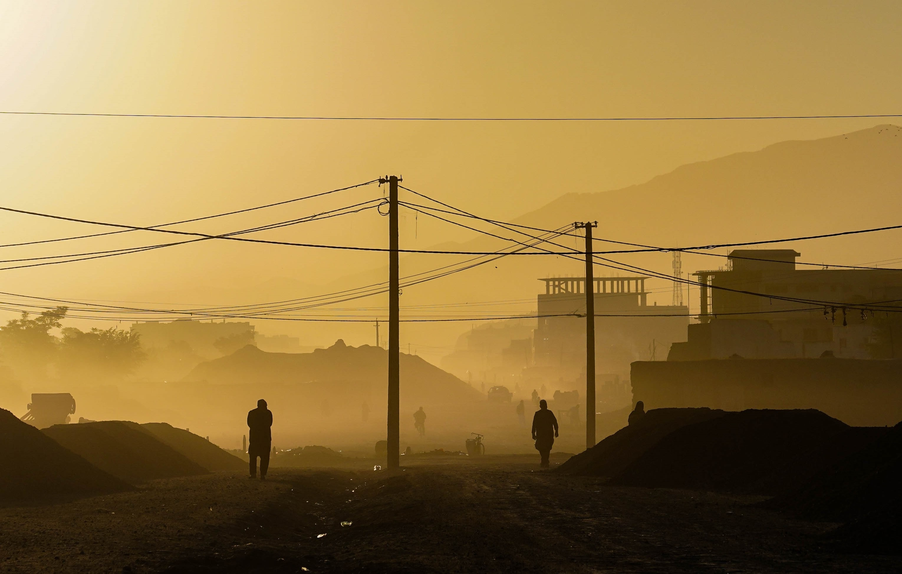
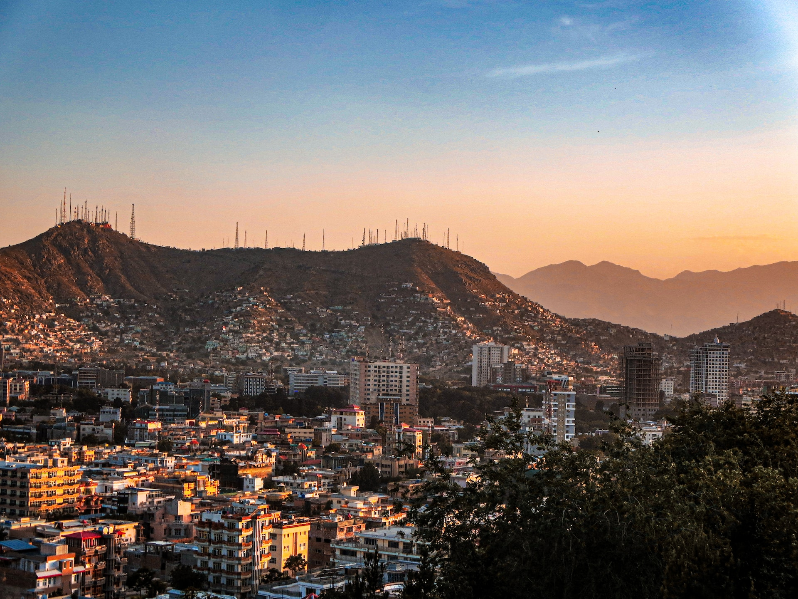
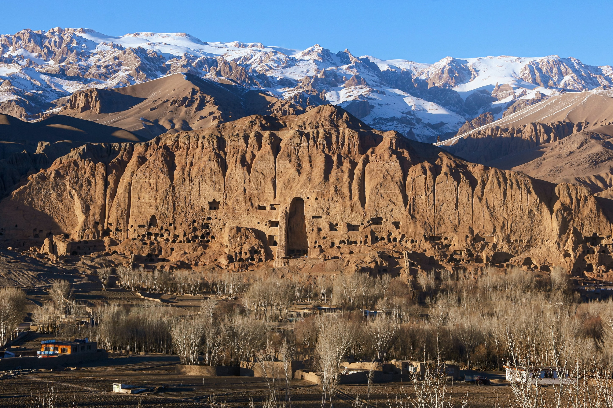
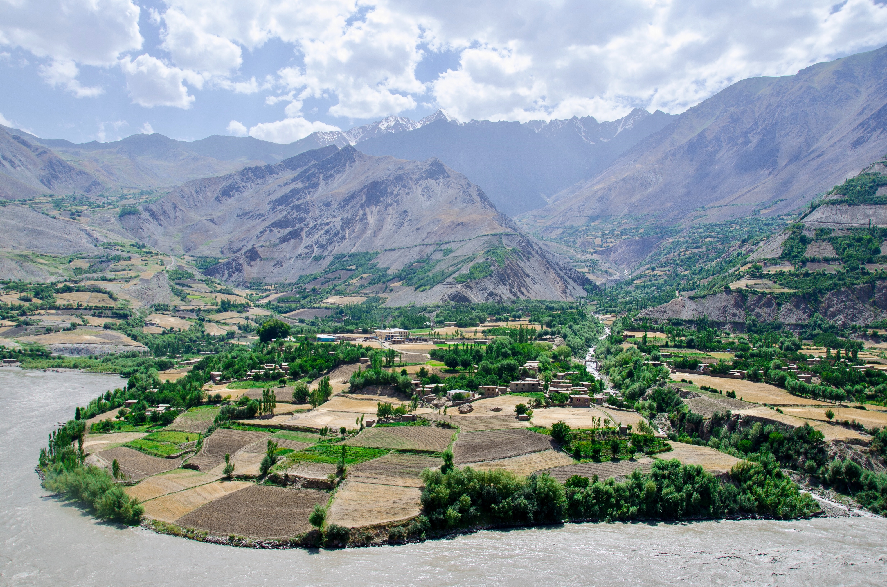
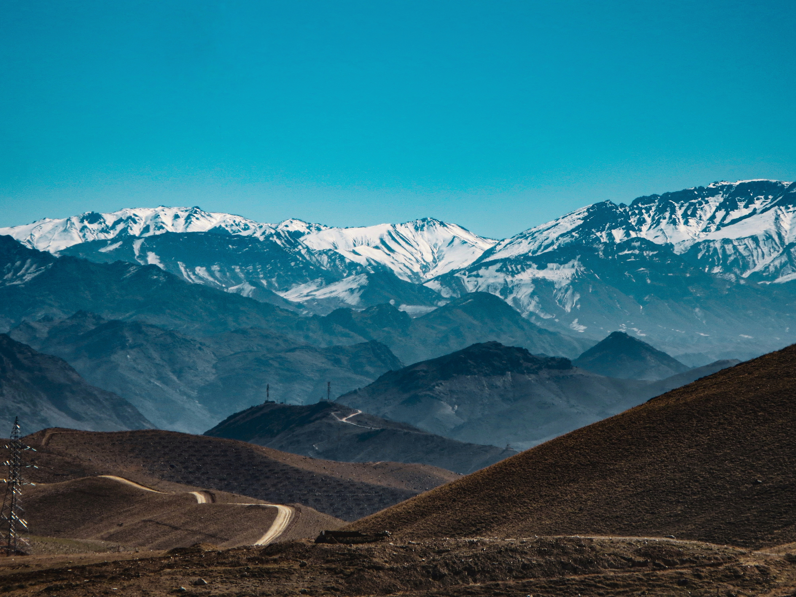
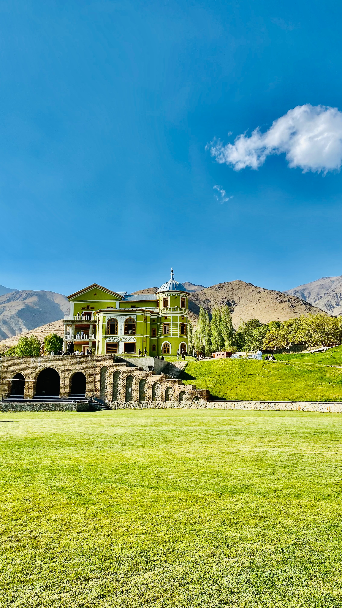
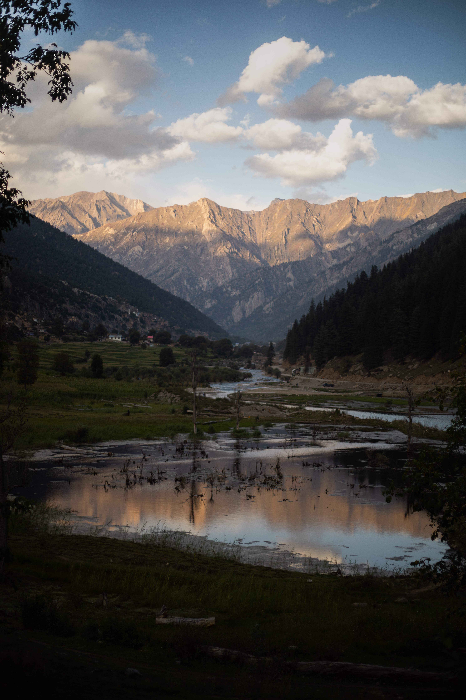
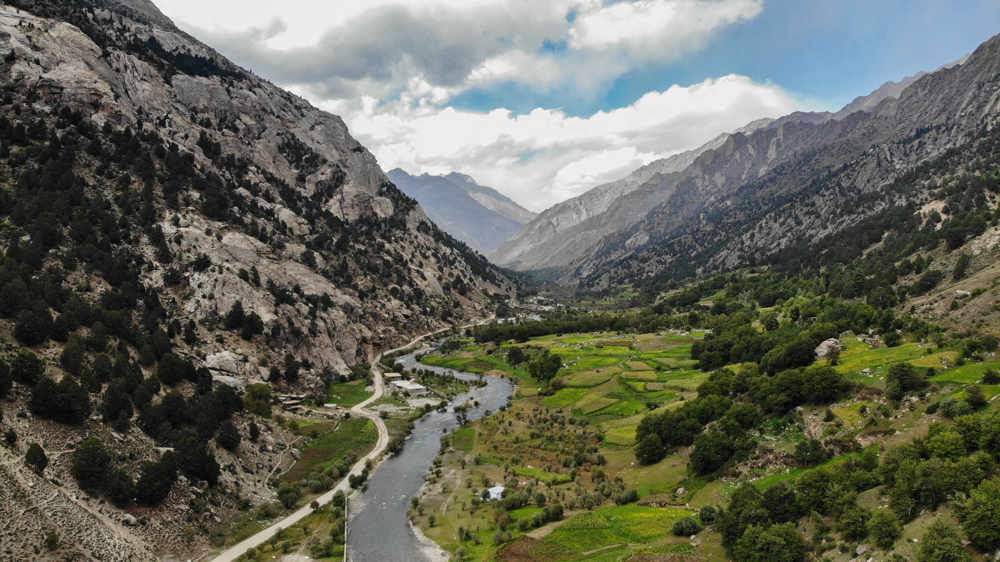
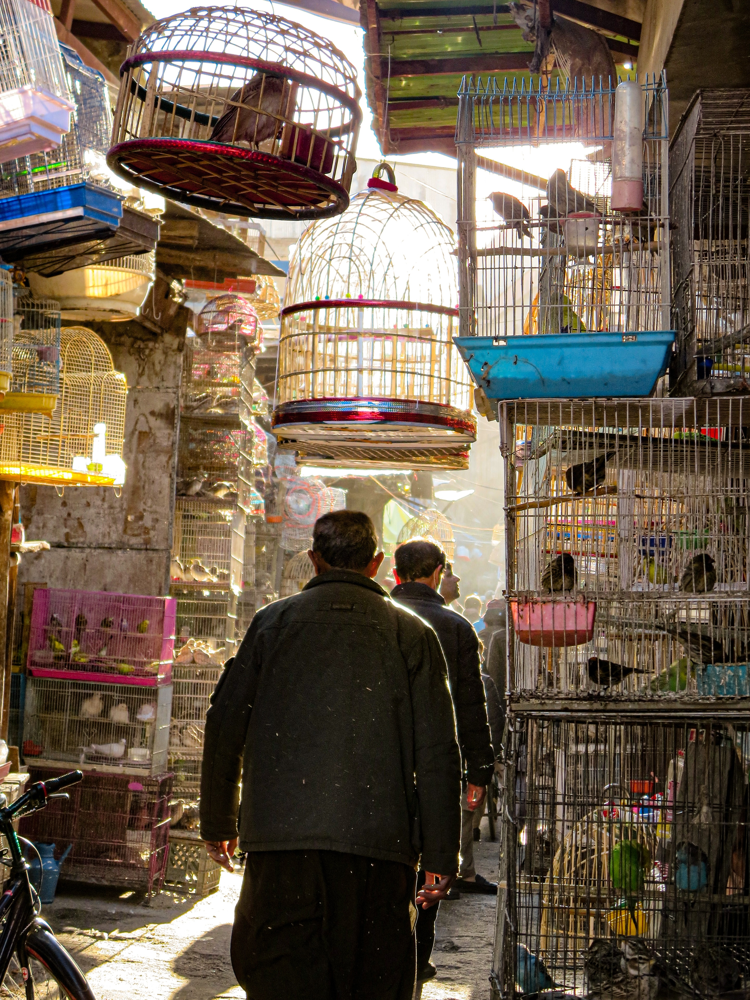

Image Gallery Afghanistan
Afghanistan Wikipedia
Afghanistan Article: Astonishing Pictures Of Afghanistan From Before The Wars
Vice News: The Fall Of Kandahar
Please enjoy these photos of Afghanistan








